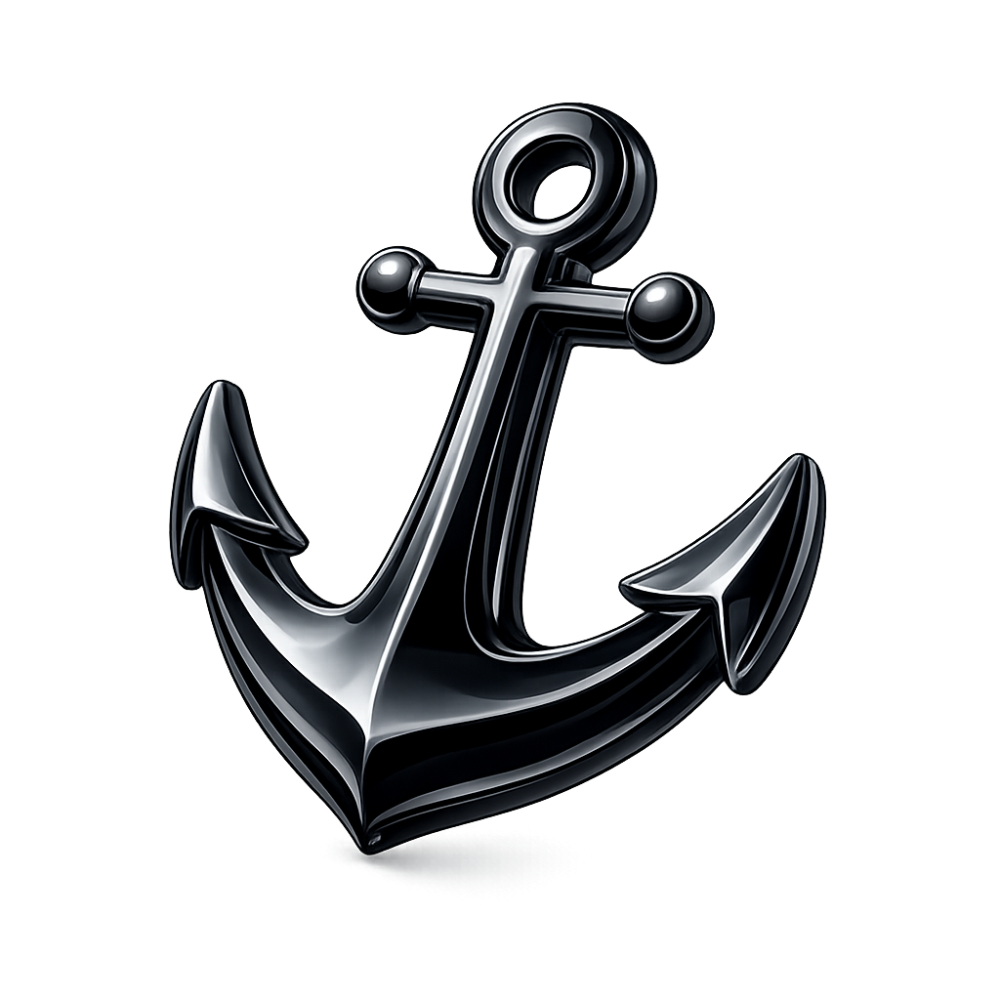
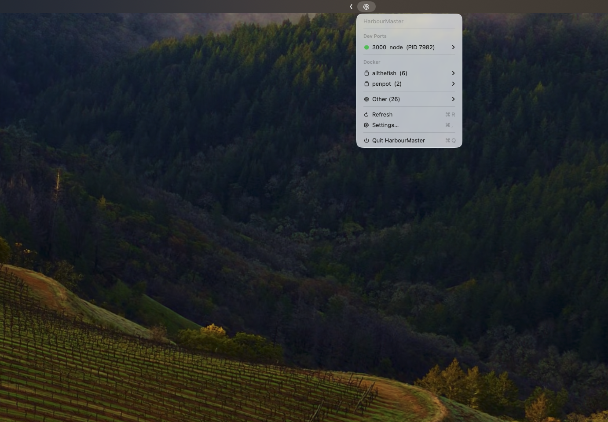
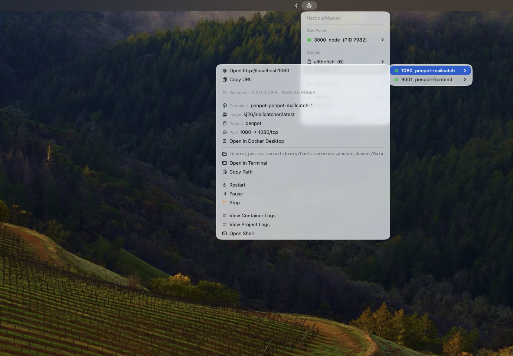
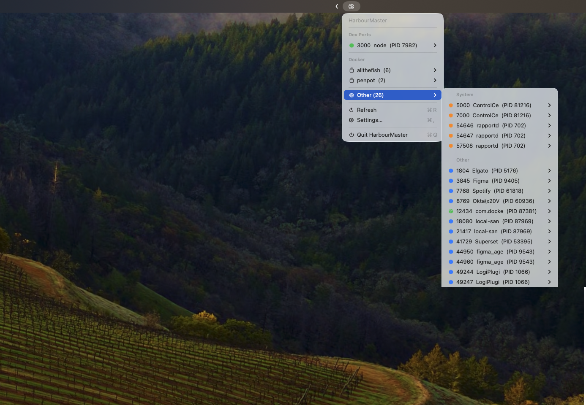
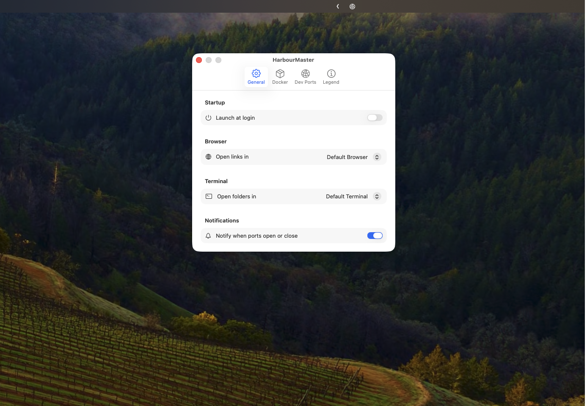
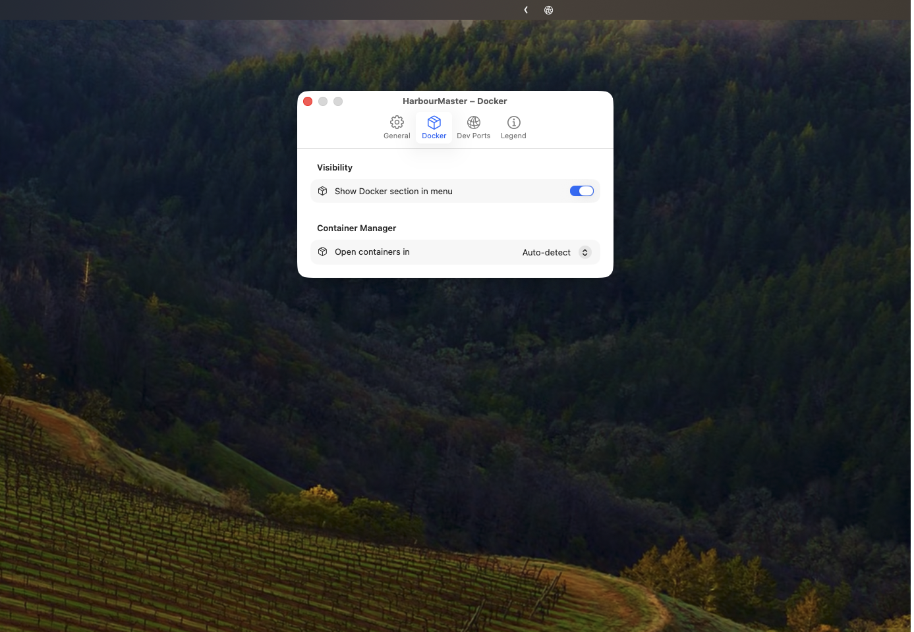

Every port. Every process. Always in your menu bar.



Scans every 5 seconds. Zero config. Works the moment you open it.
Knows node, python, bun, go, ruby, deno, rust. Dev ports surface automatically — no list to maintain.
HUD toast the second a port opens or closes. No permission dialogs. No notification settings.
Browser · Finder · Terminal · Copy URL. Everything from the menu. Nothing to type.
Real container names, Compose stacks, live stats, logs, shell — not just a port number.
AirPlay on 5000? Handoff on 7000? Flagged in orange. Needs confirmation to kill.
Port 3000 already taken? Know it before you run. No cryptic errors, no digging through logs.
Ports map to container names. Stacks collapse to one line. Everything else is a hover away.
Pick your browser, terminal, and container manager. Add custom port ranges. It remembers everything.


Free, open source, no tracking, no App Store.
Download HarbourMaster